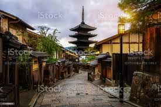
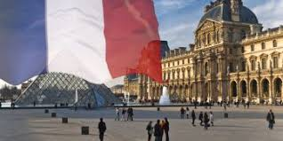
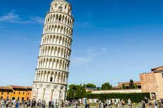
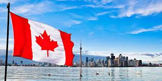

VIAJA, DESCUBRETE
No hay nada como los relatos de otros viajeros para inspirarte. Cuando estés en
casa deseando poder estar de viaje, o cuando esté en un viaje cuestionándote porqué dejaste la comodidad de tu
hogar, sumérgete en estas historias de experiencias de viaje que cambian la vida, hermosos relatos de cómo un
viaje puede transformarte.




Japón


Hola a todos. Acabo de volver de Japón y me gustaría dejar algunos consejos ya que Tripadvisor me
ha servido
muchísimo para organizar este viaje. Antes de empezar señalar que ha sido mi primer viaje a Japón, sólo siete
noches
y viajaba en pareja (lo digo porque a viajeros que conozcan más el país y quieran viajar más días quizás no les
sirva de mucho mi experiencia).
Lo primero y fundamental: los japoneses son muy amables y siempre que les preguntes estarán dispuestos a
ayudarte.
Pero recuerda que apenas hablan inglés, así que utilizarán algunas palabras básicas y gestos.
- Estuve cuatro noches en Kyoto y tres en Tokio. Me dio tiempo a ver lo fundamental de cada ciudad, aunque
sin
duda Kyoto es mucho más bonita que la capital, y eso que a mí me gustan las ciudades gigantes y de
rascacielos.
- Transporte: El Japan Rail Pass es fundamental si al menos vas a hacer el viaje Tokio-Kioto y vuelta. Como
desde Kioto puedes plantarte en Osaka o Nara en 45 minutos y en Tokio hay varias líneas de metro que puedes
utilizar,
el JRP me resultó fundamental.
Las estaciones de tren y metro se parecen a los aeropuertos en el sentido de que tienen una zona exterior y una
interior para la que debes pasar un control. Si vas con el JRP es fácil, al lado de donde estén las máquinas
para
introducir el tíquet siempre hay una ventanilla con un guardia. Enséñale el JRP y sin apenas mirarlo te dejará
pasar. Una vez dentro puedes coger el tren que te dé la gana porque todos son de JR, aunque para los viajes
largos
hay algunos vagones que sólo son con asientos reservados. Si quieres reservar en cualquier estación a una
oficina de
JR donde te hacen la reserva gratis.
Francia


Cuando hablamos de Francia nos referimos a uno de los países más visitados del mundo por sus
bellos paisajes, su vasta cultura y su deliciosa gastronomía. Sólo necesitamos pensar un poco para que comiencen
a venir a nuestra mente infinidad de lugares increíbles para conocer en este país europeo.
Por eso, en el siguiente post repasaremos algunos de los rincones más bonitos que conocer en un viaje a Francia.
Para que siempre tengas algún motivo por el que emprender una nueva aventura en este increíble lugar.
Sin duda, la joya de la corona de Francia. No hay en todo el país otra ciudad que pueda igualarse a ella por su
historia y belleza. Para conocer todos sus secretos se requiere mínimo un fin de semana pero lo idóneo es contar
con al menos cinco o siete días para disfrutar de ella al detalle.
En París hay un sinfín de cosas por hacer. Dependiendo de los días que vaya a durar vuestro viaje tendréis que
adaptar el número de actividades al tiempo del que dispondréis pero si hay algo que no puede faltar es una
visita a la Torre Eiffel, el Arco del Triunfo, el Museo del Louvre, Notre Dame, Montmartre, el Museo de Orsay,
el Puente de Alejandro III, el Teatro de la Ópera o los Jardines de Luxemburgo, entre otros.
París es también conocida como ‘la ciudad del amor’, de modo que si viajáis en compañía de vuestra pareja sería
una buena idea recorrer la orilla del Sena en un romántico paseo o sentarse en los Jardines de Trocadero para
contemplar el atardecer.
Al mismo tiempo, os recomendamos disfrutar de la gastronomía y los espectáculos que se realizan cada día en
París.
Italia


¿Preparando un viaje a Italia? No te pierdas ninguna de estas 10 cosas que deberías hacer sí o sí
en el país, de la
pasta, la cultura y los paisajes de postal.
¿En alguna ocasión te has planteado viajar a Italia? Si la respuesta es afirmativa, que estamos seguros lo será,
¿te
has parado a pensar cuántos lugares de este país se merecen pasar unos días explorándolos o cuántos requieren,
como
mínimo, un día para disfrutarlos?
La verdad es que podríamos empezar y no acabar nunca y es que Italia es un país tan increíble y maravilloso que
podríamos para pasar toda una vida descubriéndolo.
Te dejamos la selección de Skyscanner y Viajeros Callejeros en la que mostramos algunas de las mejores
experiencias
que podrás vivir en Italia.
- Recorrer La Toscana en coche
Una de las mejores maneras de conocer Italia es en coche, una opción que te permite total libertad de
movimientos y
horarios, algo imprescindible en muchos lugares del país. Y si se trata de escoger una zona en la que esto
vale
oro
esa es, sin lugar a dudas, La Toscana. Esta región, ubicada en la zona noreste de Italia es hogar de
paisajes
encantadores y ciudades tan increíbles como Florencia, Siena o Pisa. Sin olvidarnos de pueblos como San
Gimignano,
la llamada la Manhattan medieval, Montalcino, Montepulciano, Lucca o Volterra, donde perderse por sus calles
es
un
placer para los sentidos.
- Disfrutar del placer del “dolce far niente” en Roma
Si hay una ciudad que no puedes perderte en Italia, esa es Roma. Teniendo en cuenta que es una de las
ciudades
con
más cosas que hacer y más lugares que ver de todo el país, también tenemos que recordar que es la ciudad
perfecta
para disfrutar del placer, tan típico italiano, del “dolce far niente”. Ese placer que crea especial sentido
cuando
decides sentarte en alguna de las cientos de plazas de la ciudad, helado en mano, dispuesto a ver,
simplemente,
la
vida pasar.
- Perderse por los pueblos de Cinque Terre
Dicen de Cinque Terre que es una de las zonas más bellas de Italia. Sencillamente no seremos nosotros los
que
neguemos tal afirmación y es que podemos confirmar que perderse por Monterosso, Vernazza, Corniglia,
Riomaggiore
y
Manarola es todo un espectáculo para los sentidos.
Eso sí, si puedes, pasa mínimo una noche en alguno de los pueblos, ya que ésta es la mejor manera de conocer la
zona, momento en el que la mayoría de turistas se retiran y Cinque Terre deja ver su cara más encantadora.
Canada


Nuestros compañeros de Travelzoo en Canadá conocen su país perfectamente. Les fascina buscar
y compartir nuevas
experiencias. Y hay tantas cosas que ver allí... tienen de todo. Montañas espeluznantes, glaciares, una
costa
brutal, más de 30.000 islas, excelente gastronomía, ciudades espectaculares. No en vano, después de Rusia,
es el
país más grande del mundo por extensión. Así, les hemos pedido que nos den 9 recomendaciones que no nos
podemos
perder si decidimos hacer un viaje a Canadá
La Góndola de Whistler
Whistler es un pequeño pueblo en la parte oeste de Canadá, al norte de Vancouver. Está ubicado a los pies de
dos
majestuosas montañas: Whistler y Blackcomb. Entre sus dos picos, hay un funicular llamado Gondola
Peak-2-Peak.
Se trata de un paseo de unos diez minutos de duración en una especie de góndola con el fondo de vidrio que
brinda a los visitantes una perspectiva atrevida y omnisciente de uno de los mayores tesoros naturales de
Canadá. Es como una atracción y puedes ir tanto en verano como en invierno, aunque no esquíes. Ah, y si eres
friolero, hay un restaurante arriba de todo donde sirven un reconfortante chocolate caliente y desde donde
se
puede admirar a los esquiadores deslizándose por la nieve.
ballenas en la costa este y oeste
De costa a costa, las vistas de Canadá y su vida silvestre son veneradas por los turistas, pero el mar
también merece su momento. Más de 30 especies de ballenas navegan por las aguas costeras desde mayo a
septiembre (o aproximadamente un mes antes en la costa oeste). Dicen que las posibilidades de poder ver a
estos magníficos animales es del 80%. Casi seguro, vamos. Llegan hasta allí siguiendo las abundantes
reservas de krill y plancton, abandonando más tarde las costas canadienses para reproducirse en aguas más
cálidas. Las excursiones en barco están disponibles en más provincias de las que probablemente pienses que
tocan el agua: Columbia Británica, Quebec, Terranova y Labrador, Nueva Escocia y Nuevo Brunswick.
Las Cataratas del Niágara
Es cierto que es una atracción turística inmensamente popular, pero también está claro que esta lista no
estaría completa sin las Cataratas del Niágara. Es una experiencia ineludible. Están situadas en la frontera
del estado de Nueva York, en Estados Unidos, y Ontario, en Canadá, en el cauce del río con el mismo nombre
(de 56 kilómetros) y que enlaza los lagos de Erie y Ontario. Si quieres tener una buena visita y apreciar
bien su espectacularidad, nuestra sugerencia es hacer uno de los circuitos en barco a Horseshoe Falls o la
caminata Journey Behind the Falls, donde penetras en los túneles que hay detrás de la cascada y que te
permite observarlas desde el interior. El entretenimiento y el alojamiento abarcan desde moteles hasta
lujosas suites con vistas a las cataratas, pero la estrella del espectáculo siempre son las imponentes
cataratas. En la mayoría de los fines de semana, los fuegos artificiales iluminan los espumosos rápidos, y
en invierno se convierten en imponentes esculturas de hielo natural.